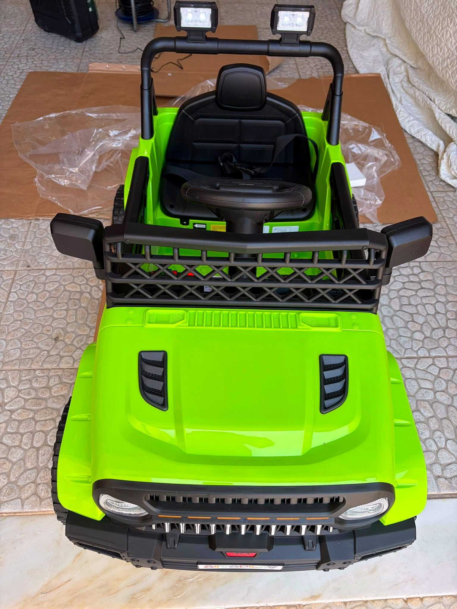
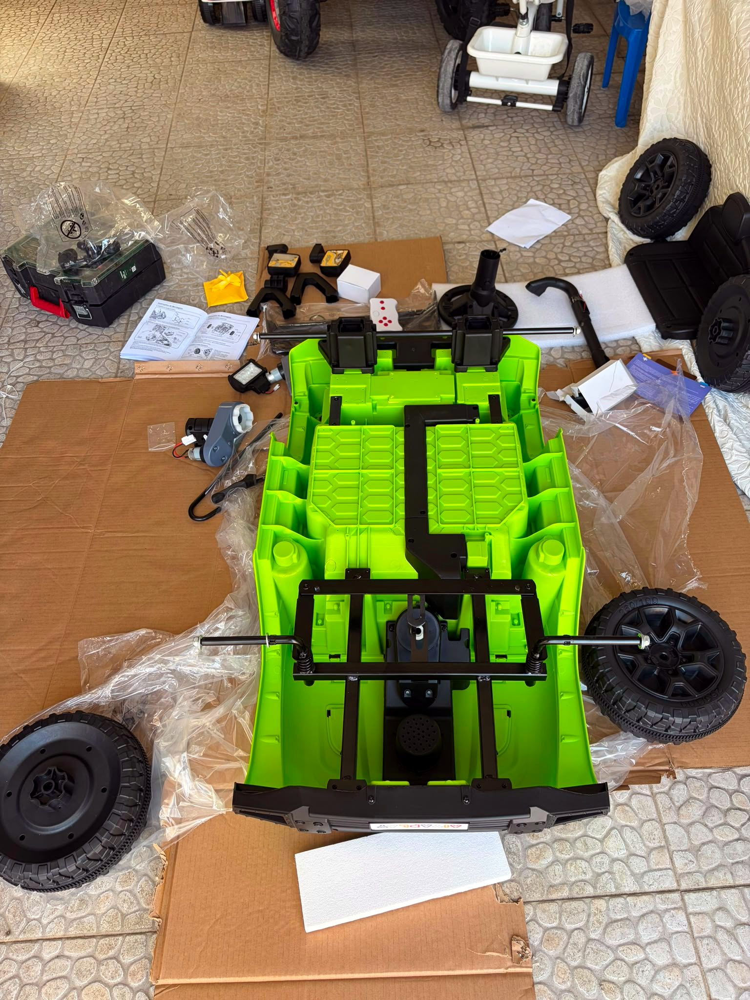
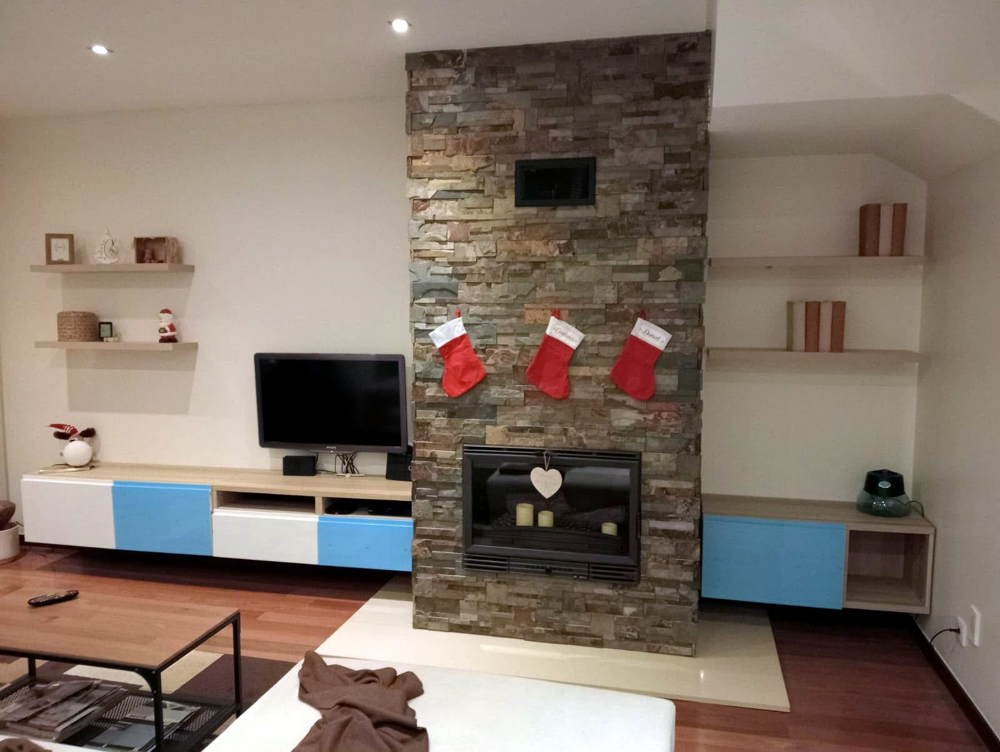
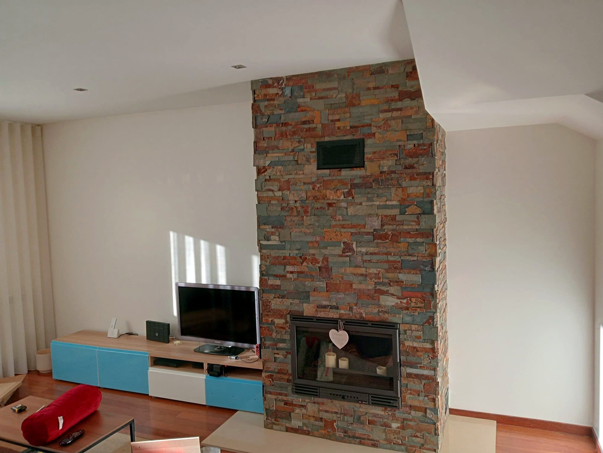
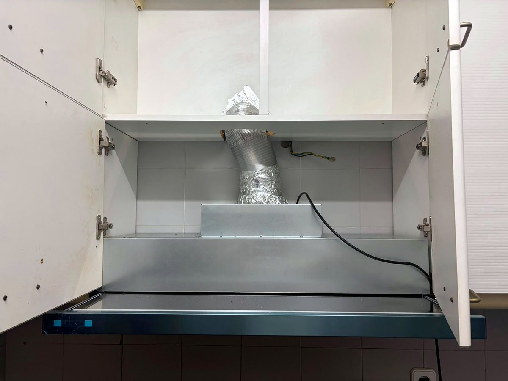
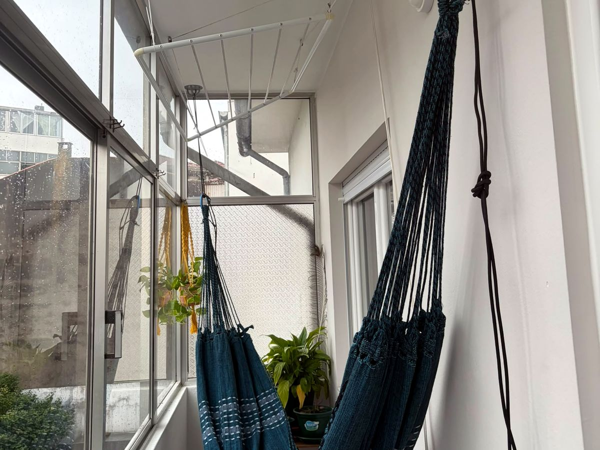
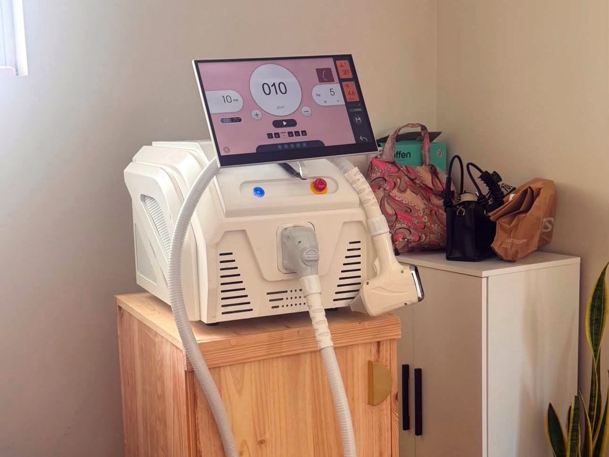

Carpintaria
e montagem
Montamos móveis e prateleiras, reparamos madeira, trocamos dobradiças e montamos exaustores. Trabalhos pequenos, bem acabados.
Um móvel que veio numa caixa, uma prateleira para pôr direita, uma porta que arrasta, uma dobradiça partida. A Dizarro resolve estes pequenos trabalhos de madeira e monta o seu exaustor — sem complicações.
O que fazemos
- Montagem de móveis (loja ou outros)
- Montagem de prateleiras e estantes
- Reparação de madeira, portas e gavetas
- Troca de dobradiças e ferragens
- Pequenos recortes e ajustes
- Transporte de móveis, quando combinado
- Exaustores: montagem e verificação de avarias
Como trabalhamos
Medimos o espaço, dizemos o que dá para fazer e o preço. No fim está montado, a funcionar e limpo.
Exemplo real
Carro infantil: das peças espalhadas no chão ao carro montado. E prateleiras fixadas na parede de uma sala, de cada lado da lareira.
MontagemMóveis de loja, montados e nivelados.
PrateleirasMontagem e ajuste de prateleiras e estantes.
ReparaçõesMadeira, portas, gavetas e dobradiças.
ExaustoresMontagem e verificação de avarias.
Antes & depois — trabalho real
Montagem · carro infantil


Carpintaria · prateleiras numa sala





→